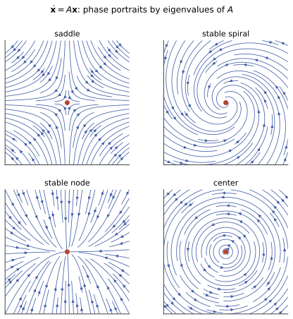

常微分 III · 线性系统与稳定性
任何高阶方程都可化为一阶方程组 \(\mathbf{x}' = A\mathbf{x}\)——于是 ODE 的问题变成矩阵的问题：解 = 矩阵指数，长期行为 = 特征值的实部。本页从矩阵指数到相图分类到 Lyapunov 稳定性，是"动力系统"观点的入门，也是本站高代 V 投资回报最高的一页。
1. 化组与矩阵指数
\(n\) 阶方程令 \(x_1 = y, x_2 = y', \dots\) 即化为 \(\mathbf{x}' = A\mathbf{x}\)（伴随矩阵形式；特征多项式恰是上一页的特征方程——两页在此合体）。
矩阵指数：\(e^{At} = \sum_{k=0}^{\infty}\frac{(At)^k}{k!}\)（逐项求导验证 \(\frac{d}{dt}e^{At} = Ae^{At}\)），初值问题的解一步写出：
计算（高代 V 全套上岗）：\(A\) 可对角化 \(= Q\,\mathrm{diag}(e^{\lambda_i t})\,Q^{-1}\)；不可对角化走 Jordan（\(e^{Jt}\) 中重根块带 \(t^k\) 因子——上一页"重根乘 \(x\)"的矩阵真相）。非齐次 \(\mathbf{x}' = A\mathbf{x} + \mathbf{f}(t)\) 的常数变易公式：\(\mathbf{x} = e^{At}\mathbf{x}_0 + \int_0^t e^{A(t-s)}\mathbf{f}(s)\,ds\)。
2. 平面相图：特征值决定几何

二维系统 \(\mathbf{x}' = A\mathbf{x}\) 的轨线全景由 \(A\) 的特征值 \(\lambda_{1,2}\) 分类（这张表值得画在纸上记）：
| 特征值 | 平衡点类型 | 图像 |
|---|---|---|
| 两负实根 | 稳定结点 | 全部流入 |
| 两正实根 | 不稳定结点 | 全部流出 |
| 一正一负 | 鞍点 | 沿稳定方向进、不稳方向出（不稳定） |
| 复根 \(\alpha \pm i\beta\)，\(\alpha < 0\) | 稳定焦点 | 螺旋吸入 |
| 复根，\(\alpha > 0\) | 不稳定焦点 | 螺旋甩出 |
| 纯虚根 \(\pm i\beta\) | 中心 | 闭轨道绕圈（临界情形） |
一句话总纲：所有特征值实部 \(< 0\) ⟺ 渐近稳定（\(e^{\lambda t} \to 0\)）；有一个实部 \(> 0\) 即不稳定。（离散系统 \(x_{n+1} = Ax_n\) 的对应判据是模 \(< 1\)——随机过程 II/数值 II 谱半径的老朋友；连续看实部、离散看模，一对镜像。）
3. 非线性系统：线性化判稳
非线性系统 \(\mathbf{x}' = F(\mathbf{x})\) 在平衡点 \(\mathbf{x}^*\)（\(F(\mathbf{x}^*) = 0\)）附近，用 Jacobi 矩阵 \(J = DF(\mathbf{x}^*)\) 线性化（数分 V 的微分=局部线性化，再次上岗）：
定理（线性化判稳，Hartman–Grobman 精神） \(J\) 的特征值实部全非零（双曲情形）时，非线性系统在平衡点附近的定性行为与线性化系统相同。⚠️ 中心（纯虚根）是例外——线性化说了不算，高阶项定生死。
Lyapunov 直接法（不解方程判稳的第二条路）：找"能量函数" \(V(\mathbf{x}) > 0\)（\(V(\mathbf{x}^*) = 0\)），若沿轨线 \(\dot V = \nabla V \cdot F \leq 0\) 则稳定（\(< 0\) 则渐近稳定）——能量不增的系统跑不远。找 \(V\) 是艺术（物理能量、二次型 \(\mathbf{x}^\top P\mathbf{x}\) 是首选试探）。
名例（Lotka–Volterra 捕食者-猎物）：\(x' = x(a - by),\ y' = y(-c + dx)\)。平衡点 \((c/d, a/b)\) 处线性化得纯虚根（中心，判稳失效）——但存在守恒量 \(V\)（Lyapunov 函数的守恒版）证明轨道是闭的：猎物与捕食者数量永恒振荡，生态学最著名的数学结论（建模页再会）。
4. 动力系统一瞥与 AI 衔接
超出线性的世界一嘴：极限环（孤立闭轨，如 van der Pol 振子——自激振荡）；混沌（Lorenz 系统：确定性方程 + 对初值指数敏感 = 不可长期预测，"蝴蝶效应"；三维以上自治系统才可能）。
🔗 AI 衔接（密集区）：梯度流 \(\mathbf{x}' = -\nabla f\) 的平衡点=驻点、\(J = -\nabla^2 f\)、极小点 ⟺ 稳定（优化 II 的静态图景在此获得动力学生命，\(f\) 本身就是 Lyapunov 函数）；RNN 的梯度消失/爆炸 = 本页"实部/模决定长期行为"（ai 课 06 讲）；Neural ODE 把 \(\mathbf{x}' = F_\theta(\mathbf{x})\) 当网络层；扩散模型的概率流 ODE（comfy 课 03 讲）是本页方程的时变版——你在 KSampler 里跑的就是一条 \(\mathbf{x}' = F(\mathbf{x}, t)\) 的数值轨线。
5. 典型例题
例 1（矩阵指数解系统） \(\mathbf{x}' = \begin{pmatrix} 0 & 1 \\ -2 & -3\end{pmatrix}\mathbf{x}\)：特征值 \(-1, -2\)（两负实根 → 稳定结点），特征向量 \((1,-1), (1,-2)\)，通解 \(\mathbf{x} = C_1 e^{-t}\binom{1}{-1} + C_2 e^{-2t}\binom{1}{-2}\)。
例 2（分类速判） \(A = \begin{pmatrix} 1 & -2 \\ 1 & -1 \end{pmatrix}\)：\(\mathrm{tr} = 0, \det = 1 > 0\) ⇒ 特征值 \(\pm i\)——中心，轨道为椭圆。（二维速判口诀：\(\det < 0\) 鞍点；\(\det > 0\) 看迹的符号定稳/不稳，判别式定结点/焦点。）
例 3（Lyapunov 直接法） \(x' = -x + y^2,\ y' = -y + x^2\) 在原点：取 \(V = \frac12(x^2 + y^2)\)，\(\dot V = -x^2 - y^2 + xy(x + y) < 0\)（原点附近高阶项被压制）⇒ 渐近稳定。不解方程，一个能量函数定乾坤。\(\blacksquare\)
常微分三页完工。下一门：把微积分搬到复平面上——复变函数，"解析"二字带来一连串好得不像话的定理。